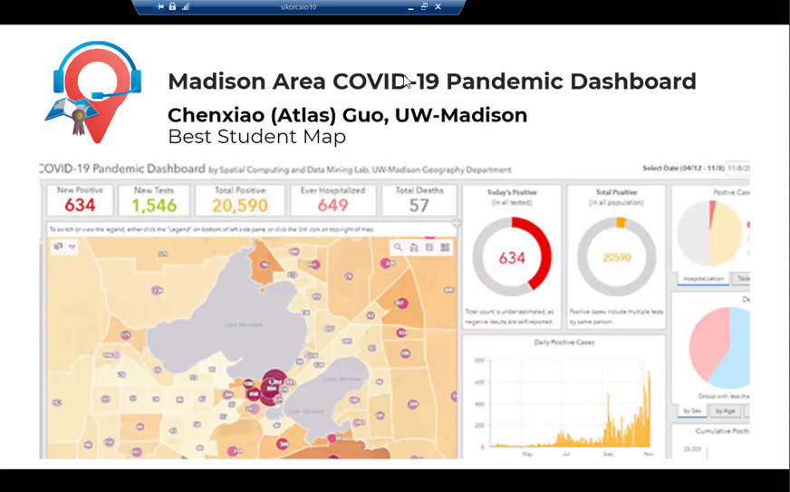
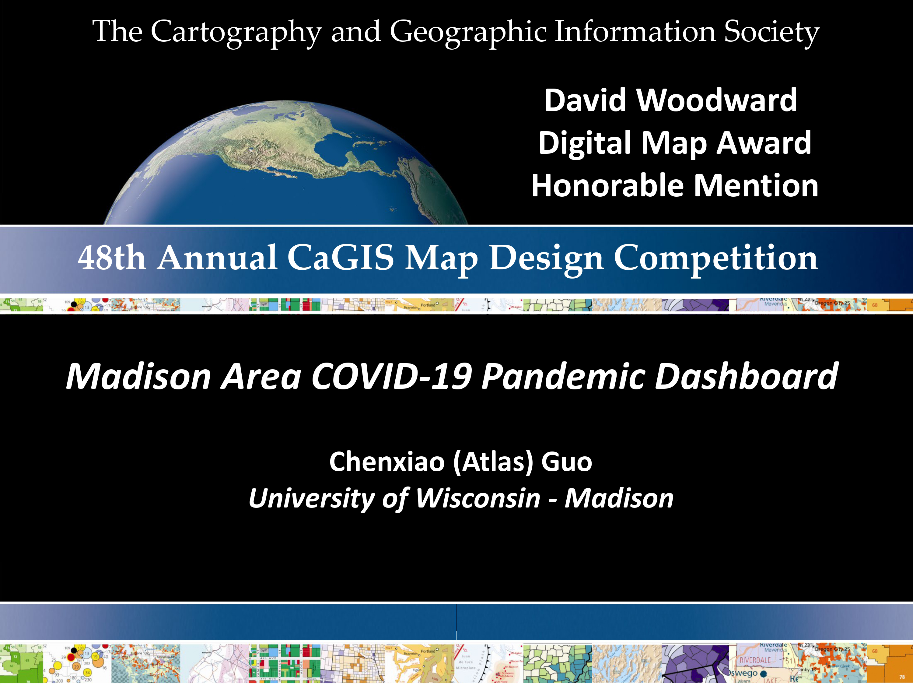

I made this interactive dashboard of Madison Area (Dane County) showing
COVID-19
Pandemic as well as relevant information from a geographic perspective. This
dashboard is originally my volunteered product for community benefits,
instead
of seeking academic achievements, though I later got endorsed by my research
lab
(SCDM) led by Professor Qunying Huang. One of our research focuses is
“spatial
science for social good”, and we hope this product could be a practice of
“Wisconsin Idea”, that university research should be applied to solve
problems
and improve the life of state citizens. Since all the data are available
(from
WI health department), and we happen to have the skills and experience in
bettering visualizing these datasets, it is our duty and honor to serve our
lovely local communities.

This map won the Best Student Map in Wisconsin Land Information Association (WLIA)
Map Contest (2021), and is the Honorable Mention of David Woodward Digital
Map Award
in 48th CaGIS Map Design
Competition (2021).

Technically, I utilized Esri dashboard embedding ArcGIS Online interactive
map
to visualize the cumulative and weekly pandemic and relevant infographics in
Dane County (such as university housing, major off-campus apartment,
university
and community testing sites). Most datasets are from the server of Wisconsin
Department of Health Services. The entire platforms include desktop and
mobile
versions for Chinese and English interface, as well as a recently released
statewide version with similar visualization but more options of
administrative
scale: census tract, zip code, sub-region (city, village, town), and school
district. Infographics include growth chart and deaths proportion by sex,
age,
race, ethnicity, and hospitalization.
As a geography student, I think Wisconsinites should appreciate that our
state
government is willing to provide these datasets in an organized and
scientific
way (accurate enough in multiple levels, regular and frequent update, with
historic data), together with satisfying consideration of privacy issue
(e.g.
hide the number of positive cases when a tract has less than 5 cases). As
far as
I know, over half of U.S. states only released county level data, and
Wisconsin
is the state with best public Covid data availability. Our story in Madison
has
already proved that even under similar overall patterns (Sep and Oct), the
actual increase modes could be significantly different: centralized outbreak
in
Sep, distributed outbreak in Oct. Without data from a fine-enough geospatial
scale, there is no way to make targeted, effective, and scientific
policies.
Though I have some different opinions on how the state health department
utilizes choropleth map to display total value, I don’t question their
authority
at all in leading us to fight against the pandemic. In this tough time,
staying
together is so important, and we should definitely show great respect
and
honor to WI Department of Health Service, Public Health Madison and Dane
County,
and UW-Madison’s relevant department including “Smart Restart Plan”. I hope
my
platform will become another useful tool in our toolkits, together with the
WI
DHS website, PHMDC Dashboard and UW-Madison COVID Dashboard. People are
supposed
to follow the official guidance and authorized information.
During an average day, there are about 500 daily visits from all platforms. The
dashboard is
included/endorsed by
UW
Data
Science,
WLIA, and
Esri Covid-19 Map Gallery.
Relevant News Report: Oct 10, 2020 by Channel3000 (Article, Video),
reprint by News Break, Ground News; Oct 27,
2020
by Channel3000 (Article, Video),
reprint by FOX47, Badger Herald; Nov 9, 2020
by
Badger Herald (Article), reprint by News Break.